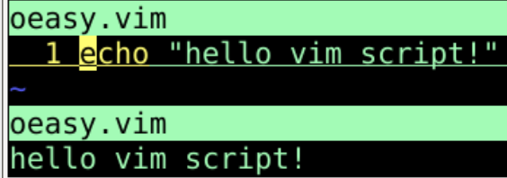
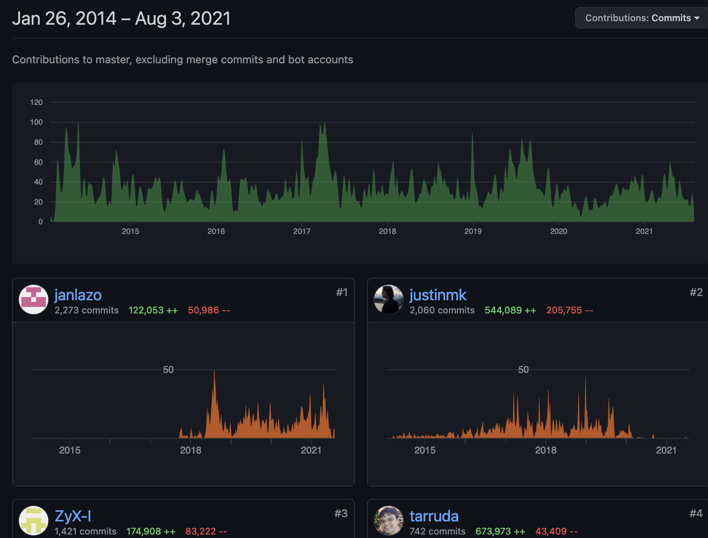
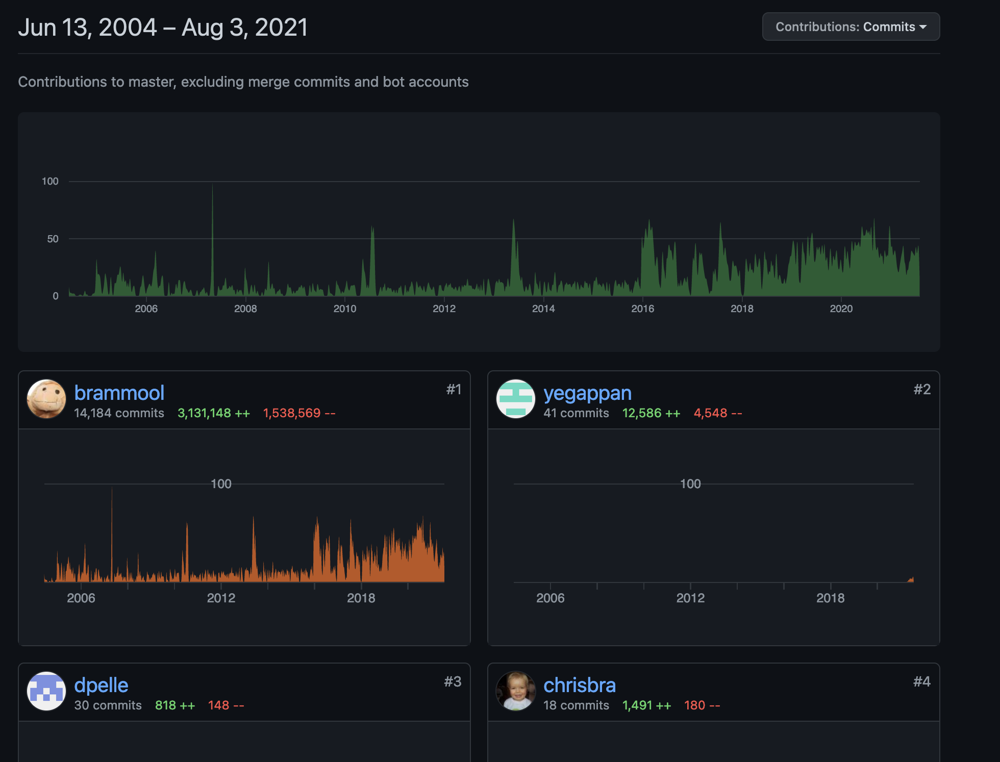
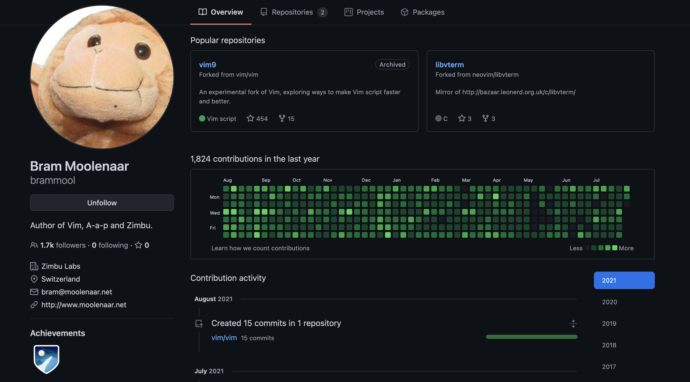
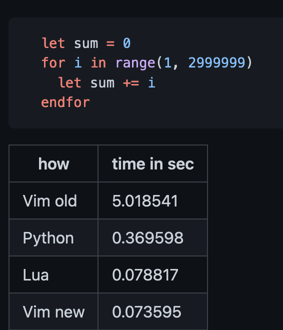

vim脚本编程展望
回忆
- 上次我们彻底研究了vim高亮的原理
- 各种语法项syntax item
- 关键字keyword
- 匹配模式match
- 区域region
- 定义好了之后还可以设置链接成组
hi def link javaComment Comment
- 然后就可以在颜色文件中具体配色了
- 比如murphy中对于Comment的定义
hi Comment ctermfg=yellow
- 不同的语言可以有不同的语法定义
- 其实，vim也是门语言
- vimscript也是可以编程的
- 怎么玩呢？🤔
编写脚本
vi oeasy.vim- 在
oeasy.vim中写下
echo "hello vim script":w:source %

- 这就是vim程序的编写和运行的基本方法
- vim既是编辑器，也是解释器
- 不过现在vim9script要有一个比较具大的改变
- 这个改编还要从2014年说起
分支
- 缘起
- 2014年vim还处于7.4版
- Thiago de Arruda为Vim提交了一个补丁，以引入多线程的功能
- 不过最终没有采纳
- 于是Thiago创建了一个分支NeoVim，并且筹集到了33万美元的资金
- 2015年末，Thiago不再领导相关的工作
- 而且neovim的社会化程度明显比vim高
- 提交代码的人数多691个人
- 而且每个人都提交好多代码
- 不过其实问题也不少

老根的演化
- vim这边
- 基本上还是非常稳妥
- 或者说比较缓慢的运动着
- 基本上是brammool一个人的世界
- 有其他的代码提供者
- 但是都是非常少的代码量
- 自从2018年开始，neovim的事情无疑刺激了brammool
- github的提交变得非常活跃

- 2016年9月12日，brammool提交了vim8
- vim8支持了异步和timer
vim9

- Bram Mool是真勤劳啊
- 谁看得出这位61年出生的老大爷已经进入了花甲之年
- vim9的项目已经成了只读的档案
- 现在的新提交的东西都在vim里面
- 不过我们可以从一些方面看到他对于vim9的企图心
vim9Script
- 这个新的脚本要加速运行
- 就要变更原来的一些模式
- 函数的参数只是名字，而不是来自于字典的东西，类似a:000列表之类的
- 本地变量不再放在一个字典里
- 异常处理的细节
- 速度能有多快呢？

- 感觉已经是脚本语言的极限了
- 据说函数是要编译成本地的指令的
- 而且要义无反顾地做一个不向前兼容的vim9script！！！
- 而且可以使用类库
- 总之，我们现在的脚本可能会发生改变
- 我们还是等vim9script发布出来之后再讲吧
预告
- 关于vim9现在有个预告
- https://vimhelp.org/vim9.txt.html#vim9.txt
- 我感觉这脚本离不开vim
- 而且一定可以很方便地使用缓存buf、寄存器reg、标签tab之类的东西
- 双方已经上场对战
- 也许会杀出个第三方比如SpaceVim之类的
- 本教程先告一段落
总结
- vim历史悠久
- neovim前来挑战
- vim及时调整
- vim9script令人期待
- 到底什么时候更新
- 要等vim9script出来🤔
- 之后再说！